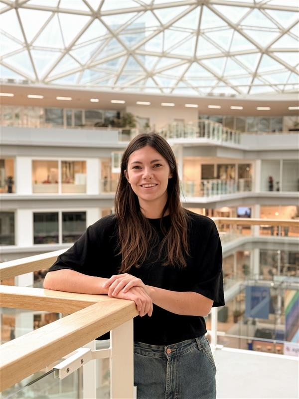
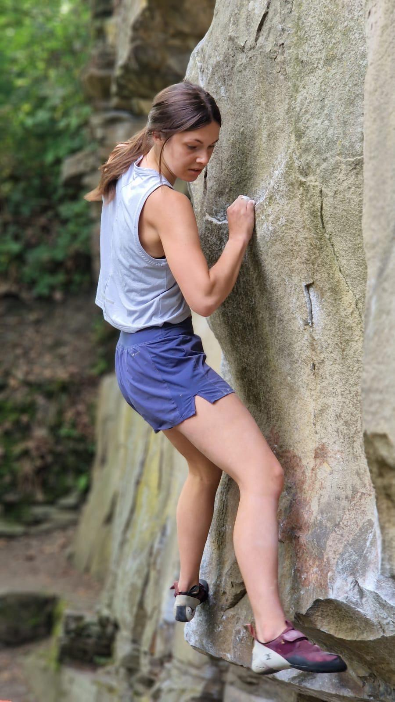
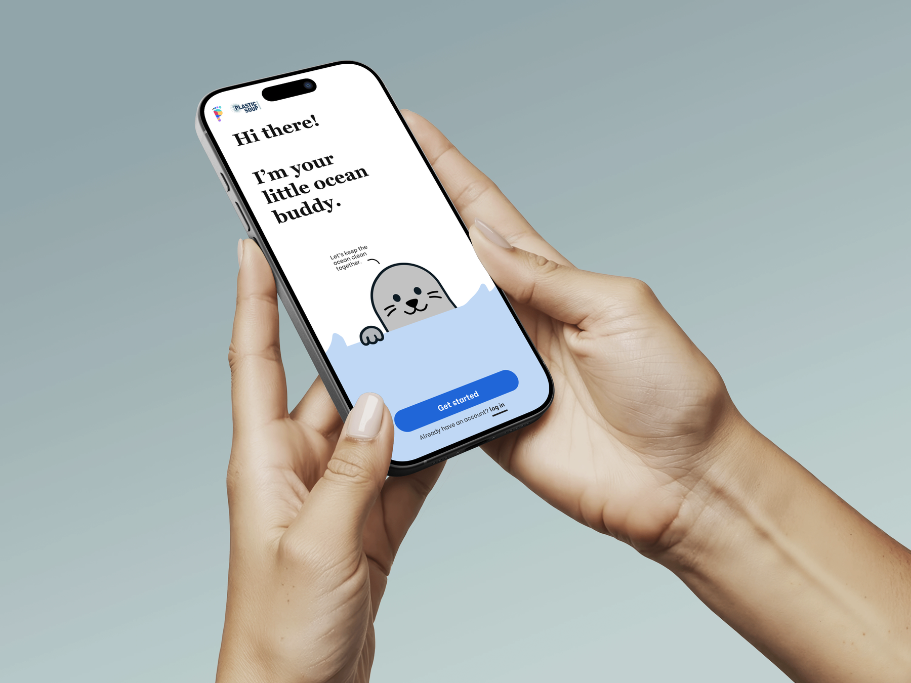

I’ve always felt a deep connection to animals and the natural world. Asspecially afer my animal education. d They remind me to slow down, be patient, and care for the life around me. I love capturing them with my camera.
My name is Pien van Kalkeren, and I’m a designer who is driven by meaningful impact. I love nature, animals, and the feeling of being fully present in the world around me. Those things shape the way I work and the kind of experiences I want to create.
Running, and climbing are a big part of my life. They give me energy, push me beyond my comfort zone, and help me grow in a way that feels real. I love what it does to me: it challenges me, strengthens me, and reminds me that growth often starts when I stop playing safe.
That same mindset is what I want to reflect in my designs. I want my work to feel alive, thoughtful, and strong something that gives people energy and helps them move forward. I care about creating digital experiences that are not only beautiful, but also useful, human, and connected to the world we live in.
Download my CV
A little more of me
I’ve always felt a deep connection to animals and the natural world. Asspecially afer my animal education. d They remind me to slow down, be patient, and care for the life around me. I love capturing them with my camera.

Running and climbing keep me grounded. They remind me that growth often happens just outside my comfort zone.

I design for a better world, not just screens. I want my work to feel helpful and meaningful in the real world.
What drives me
Languages
My approach
I want to design experiences that make the world a better place.